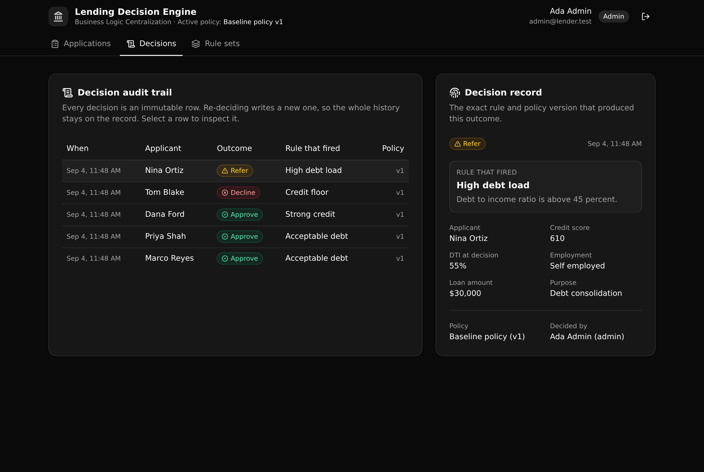

A governed loan decisioning API. One versioned policy decides every application, and every decision returns the exact rule that fired, the policy version behind it, and a written audit row.

Underwriting rules tend to get copied across an intake app, a partner API, and an ops tool. They drift, and no one can say which version decided a given loan. This backend pulls those rules into one place.
The whole waterfall lives in one function that both the API and the seed call. There is one way a loan is decided, not several.
Exactly one rule set is active. Activate a new version and the same application decides differently, with the old decision still on the record.
Each decision snapshots the outcome, the firing rule, the version, and the DTI. Re-deciding writes a new row, so nothing is overwritten.
Everything lives under api:lending. Roles are enforced by the API, not the UI.
| Method | Path | Role | What it enforces |
|---|---|---|---|
| POST | /auth/login | public | Verifies the password hash, mints a token |
| POST | /seed | public | Resets and loads the demo data |
| POST | /applications | underwriter, admin | Submits an application, computes the DTI ratio |
| POST | /applications/decide | underwriter, admin | Runs the waterfall, writes an audit row |
| GET | /decisions/list | viewer and up | The decision audit trail |
| GET | /decisions/detail/{id} | viewer and up | One decision, joined to its rule and applicant |
| POST | /rule-sets/activate | admin | Activates a version, archives the previous one |
| POST | /rules/upsert | underwriter, admin | Edits a rule, only while the version is a draft |
Submit an application against an applicant, then decide it under the active policy.
Read the audit trail and open any decision to see the exact rule and version behind it.
Compare the versioned policies and their ordered rules, and activate a version as admin.
Hand this prompt to your coding agent, or run the steps yourself, to stand up your own live copy in a minute.
# Ask your agent: Clone https://github.com/xano-scratch/lending-decision-engine and stand up my own live copy. Run npm install, then npx xanots login, then npm run xano:deploy, and load the demo data from the sign-in screen. # Or run it yourself: git clone https://github.com/xano-scratch/lending-decision-engine cd lending-decision-engine npm install npx xanots login # authenticate with Xano (once) npm run xano:deploy # deploys, prints the live URL
Then open the printed URL, click "Load the demo data", and sign in as
admin@lender.test with password password123.